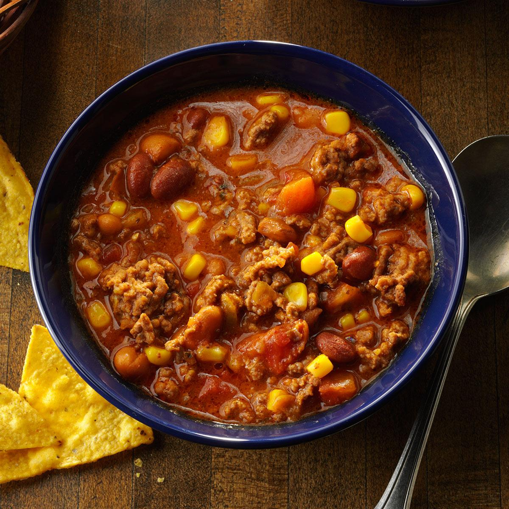

Taco Soup

Recipe Description
This super easy to make chili-like dish is great with some dairy free sour cream, cheese, and fritos. Or tortilla shells if that's your thing!
After you brown the meat (I prefer ground turkey), just add the canned ingredients along with the seasoning packets to the pot. Let it all warm up then dive in! Easy peasy lemon squeazy!
Ingredients
- 1 lb ground turkey or beef
- Two Cans black beans
- One Can Rotel
- One Can corn
- One Can tomato sauce
- Ranch seasoning packet
- Taco seasoning packet
Instructions
- Brown the ground meat, drain, return to large pot
- Add the canned ingredients
- Add the seasoning packets
- Warm everything on medium heat for 5 minutes, or until ready to serve